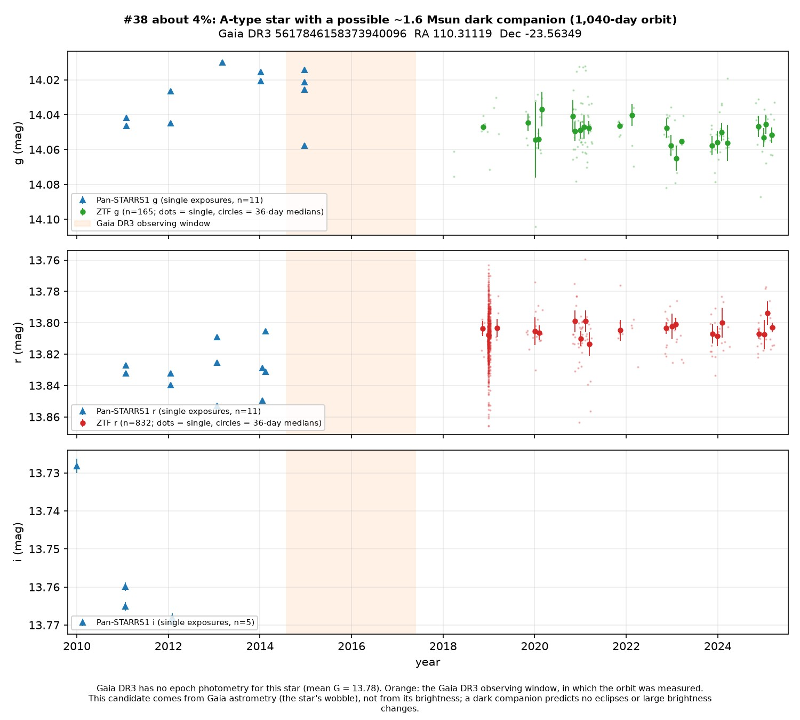
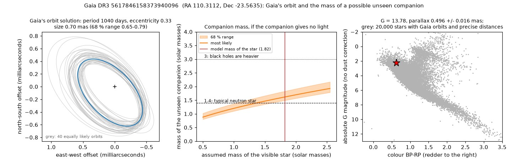
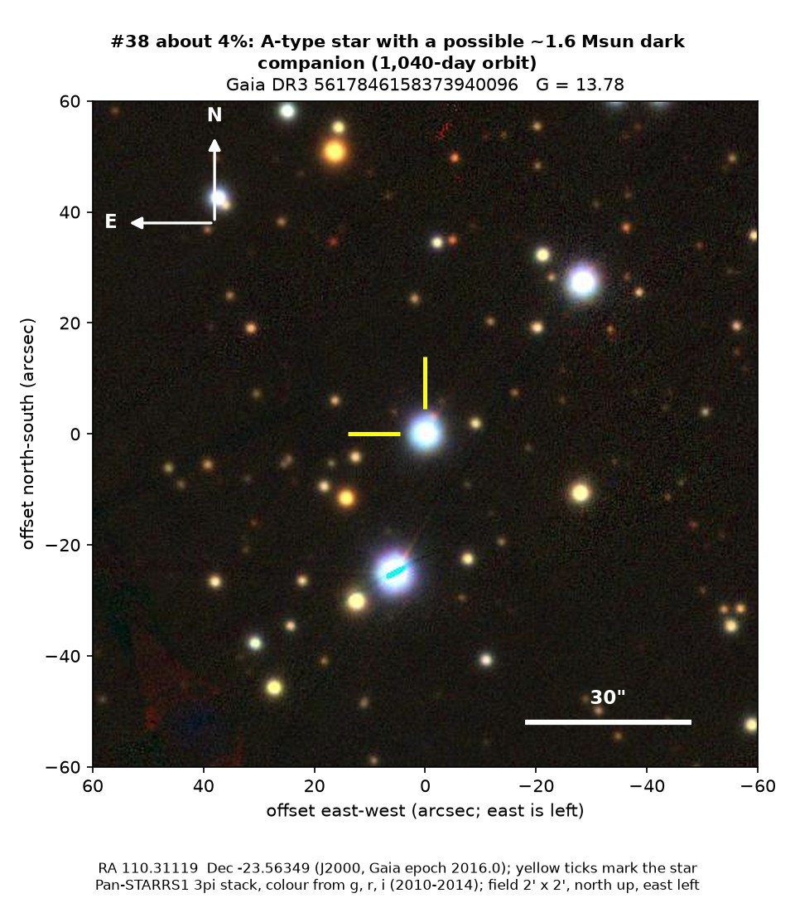

Professor of Mathematics
Paata Ivanisvili
Department of Mathematics, University of California, Irvine
Candidate 38: a hot star whose wobble hints at a dark companion
Why this estimate. The orbit takes as long as Gaia’s published observations lasted, so it is poorly pinned down. Estimates of the star’s own mass disagree, so the companion’s mass is uncertain, a close pair of ordinary stars could mimic it, and no measurements along the line of sight confirm it.
How to read the pictures. The orbit figure has three panels. On the left is the small ellipse that Gaia’s orbit traces on the sky, measured in thousandths of an arcsecond, with grey orbits that fit the data about equally well. In the middle is the mass the unseen companion would need for each possible mass of the visible star; the shaded band is the likely range, the red line marks the star’s estimated mass, and the dotted and dashed lines mark 3 and 1.4 solar masses, roughly where black holes begin and where a typical neutron star lies. On the right, the star (red) sits among other stars in Gaia’s diagram of colour against brightness. The finder chart shows a patch of sky two arcminutes across, about a fifteenth of the Moon’s width, with north up and east to the left; the star sits between the two yellow ticks, and the white bar is 30 arcseconds long. On the light curve the vertical axis is magnitude, a brightness scale on which larger numbers mean fainter stars, and it is drawn so that down means fainter. Here the orange band marks the years in which Gaia measured the orbit, not a change in brightness. Each survey uses slightly different filters, so each is compared with its own normal level.

What Gaia found. This is a hot white star of type A, about 9,800 K, seen through some dust about 2,000 parsecs away in Canis Major. Gaia’s main orbit-fitting method found a 1,040-day orbit. If the star has about 1.8 solar masses, the companion has about 1.6 solar masses (1.5 to 1.8) and gives off no visible light: it could be a neutron star or a heavy white dwarf. The steady light curve is consistent with a dark companion.
Why the estimate is low. The period equals the length of Gaia’s third data release, so the orbit is poorly pinned down. Two estimates of the star’s mass disagree (1.8 and 2.4 solar masses), and if the star were 30 per cent lighter than the lower one, the companion would drop below 1.4 solar masses. A close pair of ordinary stars can mimic a dark companion of this mass, and there are no measurements of the star’s speed along the line of sight. A faint eclipsing binary lies 3.3 arcseconds away, but at G = 19.9 it is far too faint to fake the orbit.
No record of a dark companion for this star could be found.
- Star
- Gaia DR3 5617846158373940096, a hot A-type star
- Location
- RA 110.31119°, Dec −23.56349° (J2000), in Canis Major
- Distance
- about 2,000 parsecs (6,500 light-years)
- Brightness
- Gaia G = 13.8
- Probability
- This candidate is unconfirmed. The percentage under the title is an estimate of the chance that it is a real, previously unrecorded case of the kind described. The estimate has not been checked by outside experts. See the introduction to all fifty-eight candidates.
- Caveat
- The orbit is as long as Gaia’s observations, the star’s mass is uncertain, a close pair of ordinary stars could mimic the companion, and no measurements along the line of sight confirm the orbit.

